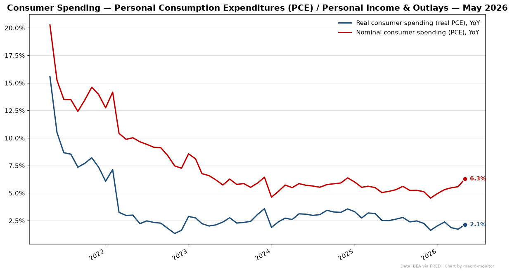
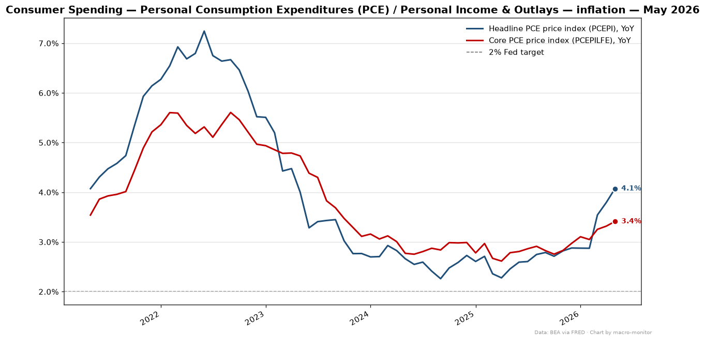
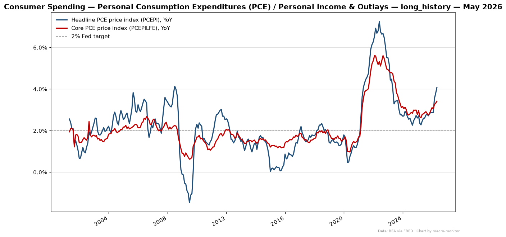
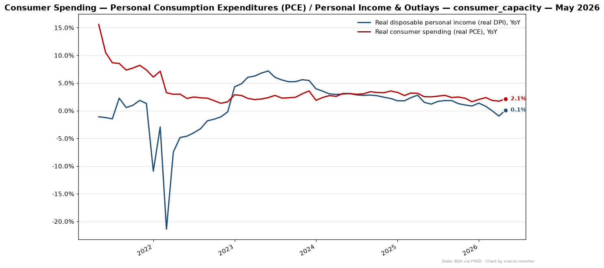

| Series | Primary | Also | Prior |
|---|---|---|---|
| Real consumer spending — Real Personal Consumption Expenditures (real PCE) (PCEC96) | 2.13% | mom_pct 0.26% | 1.72% |
| Nominal consumer spending — Personal Consumption Expenditures (nominal PCE) (PCE) | 6.29% | mom_pct 0.71% | 5.58% |
| Headline PCE price index — Personal Consumption Expenditures inflation (PCEPI) (PCEPI) | 5.53% | yoy_pct 4.07% · mom_pct 0.45% | 5.04% |
| Core PCE price index — ex food & energy (PCEPILFE) (PCEPILFE) | 3.91% | yoy_pct 3.41% · mom_pct 0.32% | 3.05% |
Anchor: PCEPI (annualized_mom) · delta z-score vs 5y: +0.18σ
| Trend | Stat | Value |
|---|---|---|
| 3mo annualized | annualized_mom | 6.28% |
| 6mo annualized | annualized_mom | 5.34% |
| Series | Transform | Value |
|---|---|---|
| Personal income (PI) (PI) | yoy_pct | 3.82% |
| Personal saving rate (PSAVERT) (PSAVERT) | raw | 3.00 |
| Real disposable personal income (real DPI) (DSPIC96) | yoy_pct | 0.02% |



